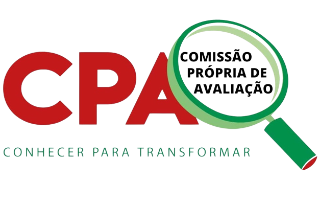

Relatório CPA - 2023

Light mode / Dark mode
Selecione o eixo e a questão, respectivamente:
Eixo
Pergunta
E1Q1. Qual o seu nível de conhecimento sobre a Comissão Própria de Avaliação (CPA) do seu Câmpus
Figura 03 - Gráfico das respostas da questão 1 do eixo 1 por categoria.
Gráfico das respostas da questão 1 do eixo 1 por curso: